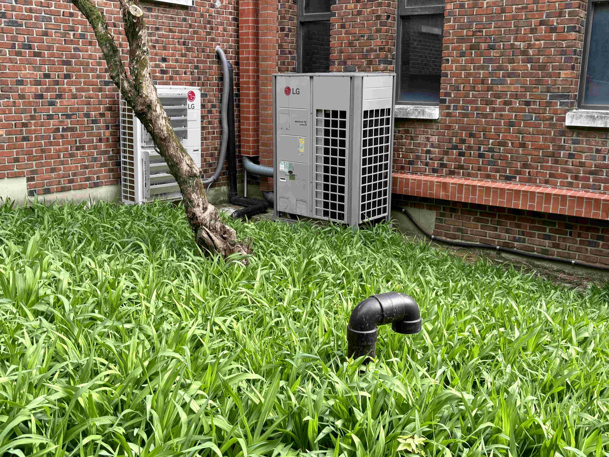
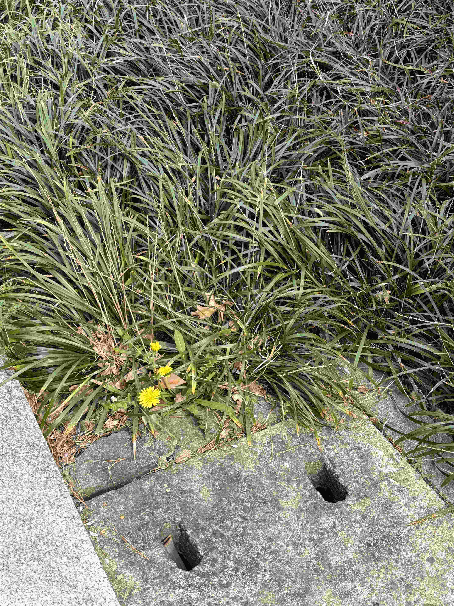
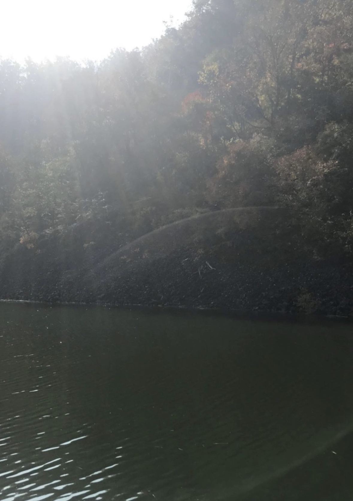

자연물
시점이 자연물을 중심으로 맞춰진 사진들
-
하굣길의 잔디밭
이곳은 내가 매일 하교하면서 보는 잔디밭인데, 한 번씩 지나갈 때마다 쑥쑥 자라있는 것을 볼 수 있다. 원래는 잔디가 이렇게까지 자라있지 않았었는데 이번에 많이 자라있길래 사진을 찍어봤다. 잔디가 무성하게 자라기 전에는 푸른색이 별로 없어서 나무와 검은색 기둥이 눈에 잘 보이지 않았는데, 다 자라고 나서야 저것들이 똑바로 보이기 시작했다. 이전엔 흙색이 나무, 기둥의 색과 비슷해서 잘 안 보였었던 것 같다. 일상에서 무심코 지나칠 수 있는 것들이라도 자세히 들여다보면 그 존재를 강하게 인식할 수 있다고 생각했다.
-
민들레
이것 또한 내가 하교하면서 볼 수 있는 것인데, 다 밟혀있는 잔디 옆으로 민들레가 보란 듯이 예쁘게 자라있는 걸 보고 대비됨을 느꼈다. 더욱이 옆에 회색 하수구가 자리 잡고 있음으로써 경계 때문에 민들레가 더 잘 보인다고 생각했다. 이렇게 색감, 모양 외에도 자연물의 경우에는 생명력으로도 대비됨을 느낄 수 있다는 것을 이 사진을 계기로 하여 조금 더 생각해 보게 됐다.
-
강
이것은 딱 보자마자 매우 늪지 같다는 생각이 들어서 찍었다. 사실은 본가로 올라가다가 잠깐 마주친 커다란 강이지만 사진이라는 작은 프레임 안에 담으면 늪지 같아 보일까 생각했었다. 마침 운 좋게 사진을 찍는 순간에 렌즈에 햇빛이 반사돼서 아래쪽에 타원 모양의 빛을 형성해 냈다. 추가로 왼쪽 위에는 햇빛이 강 쪽으로 내리쬐는 효과가 만들어졌다. 이것들이 사진 안에 전부 합쳐져서 자연의 느낌을 매우 잘 낼 수 있었다고 생각한다.